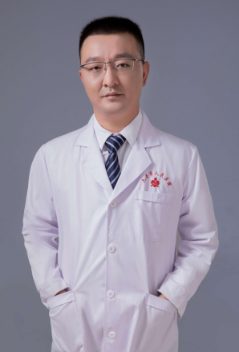
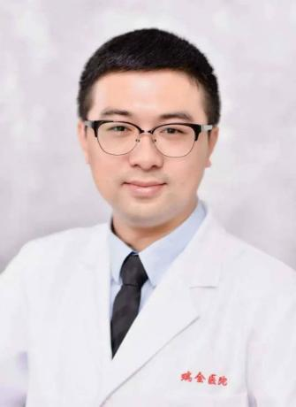

EP01 · 上海 → 六安35:02
接住的，不仅是技术
一项技术，怎样真正留在基层？
从赴沪进修到回到六安，郑权老师聊起3D打印、临床思维，也聊到年轻医生的沉淀与医患之间的理解。
- 3D打印与临床
- 年轻医生的成长
- 医患之间的理解
去微信听完整故事 公众号原文 · 图文与音频
电波特别企划 · 从黄浦江到大别山：电波特别企划EP1——接住的，不仅是技术
 山海有回声博医计划 · 青年实践
山海有回声博医计划 · 青年实践博医之声 · 电波特别企划
从上海到六安、日喀则，听两位医生聊技术、成长与那些真实的选择。
戴上耳机，走近他们的故事。
EP01 · 上海 → 六安35:02
一项技术，怎样真正留在基层？
从赴沪进修到回到六安，郑权老师聊起3D打印、临床思维，也聊到年轻医生的沉淀与医患之间的理解。
电波特别企划 · 从黄浦江到大别山：电波特别企划EP1——接住的，不仅是技术

EP02 · 上海 → 日喀则42:39
三年援藏，能为一座医院留下什么？
走上高原的手术台，也走进当地人的生活。乐飞老师回望三年援藏，谈技术如何落地、人才如何成长，以及医学生的基本功。
电波特别企划 · 从黄浦江到日喀则：电波特别企划 EP2——带去的，不只是技术
让回声传得更远
在公众号原文里留下你的喜欢，也欢迎把这一期分享给身边的同学。